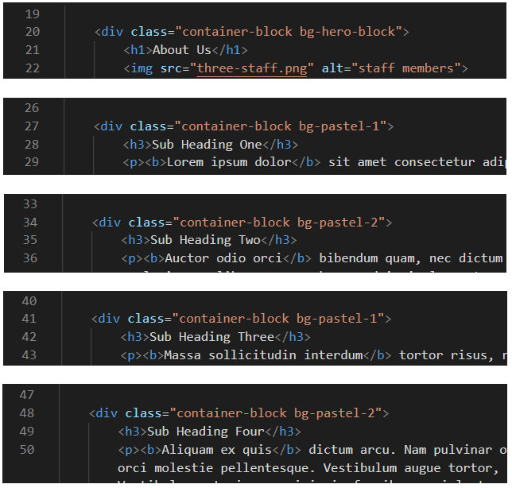
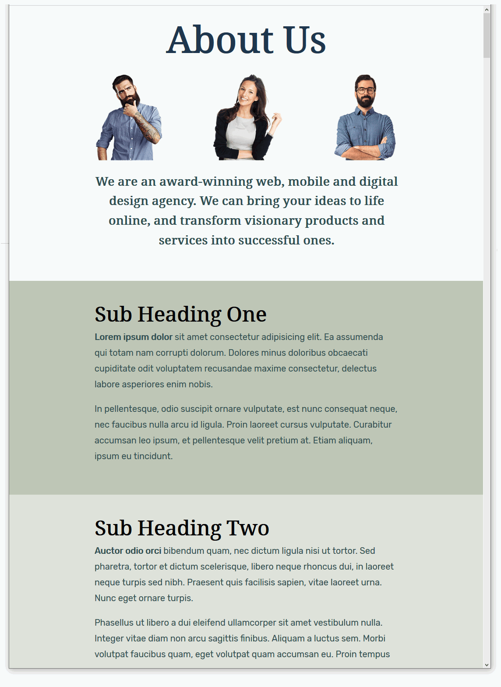
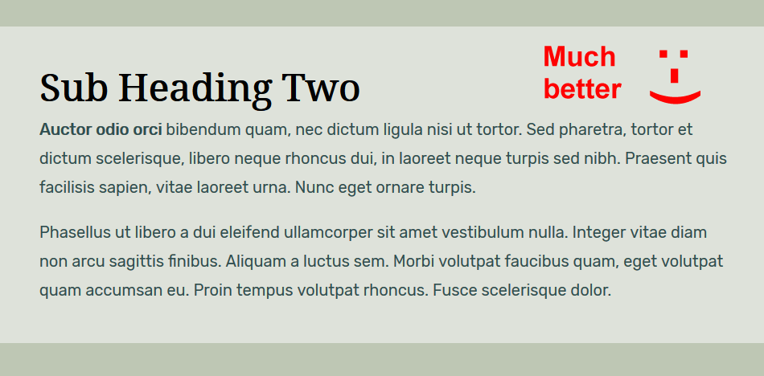
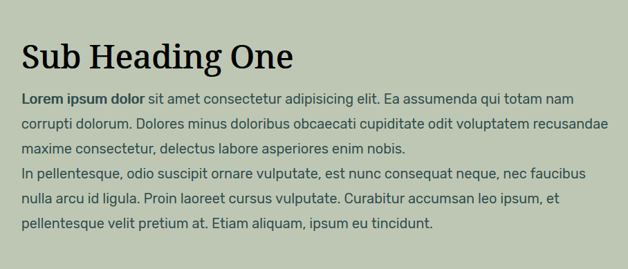

Learning Goals
At the end of this Tutorial you will be able to:
- Understand the concept of the ‘box model ’ in styling and positioning elements on a web page.
- Apply properties and values in CSS for three components of the box model: padding, borders and margins.
You can view a finished version of this exercise by clicking the image below.

About ‘sections’ in web pages
In this Tutorial you will work with these files:
- The page-10.html web page, which contains the student-computer-screen.jpg image.
- The page-10.css stylesheet.
You downloaded and unzipped these three files in the previous Tutorial.
Open the HTML and CSS files in Visual Studio Code.
Working with your sample web page
In this Tutorial you will work with these files:
- The page-10.html web page, which contains the three-staff.png image.
- The page-10.css stylesheet.
You downloaded and unzipped these three files in the previous Tutorial.
Open the HTML and CSS files in VS Code
Editing with your CSS stylesheet
Follow these steps to add some standard layout spacing to your content block divs.
- In VS Code, add new padding values to the container-block declaration. You can simply copy-and-paste the following.
.container-block {
border: solid 1px red;
padding: 50px 18% 50px 18%;
}
- Save the page-10.css stylesheet and view your page-10.html page in your web browser. It should look as shown below.

Styling your container blocks
In the next few steps, you will add some new classes to create different background styles on your web page.
- At the bottom of your page-10.css stylesheet, copy-and-paste these following three new styles. Each style does only one job: it adds a background colour.
.bg-hero-block { background-color: #f5f9fb }
.bg-pastel-1 { background-color: #BEC7B4 }
.bg-pastel-2 { background-color: #DEE2D9 }
}
- You can now delete the ‘red box’ style rule from your container-block declaration.
A better option is wrap it inside comment tags, just in case you want to reuse this visual guide again later.

- When finished, save your page-10.css stylesheet file.
- Switch to your page-10.html web page, and add the following classes to the container-block div tags.

Each of your content container blocks now has two classes that control its appearance:
- A container-block class that controls the spacing around it, and
- And a second class such as bg-pastel-2 that controls only the colour of its background - and nothing else.

- Save your page-10.html web page and view it in your web browser. It should now look as shown below.

Controlling the vertical spacing between container blocks
One problem remains with your web page: there is more vertical spacing below the content of your container blocks than above them.

This does not look right
A more professional and visually pleasing web page would have equal vertical spacing at the top and the bottom of the content within the container blocks. See below.

The extra vertical spacing at the bottom of your container-block divs is the result of the margin-bottom value of the paragraph tag.
margin-bottom: 20px;
You could delete this CSS rule from the paragraph styles. Then your paragraphs would have a margin-bottom value of zero, as set out in the web browser resets at the top of your stylesheet file.
Unfortunately, there would then be no vertical spacing between paragraphs of text within your container block divs. See below.

A more correct solution is as follows:
- In your page-10.css stylesheet, under the .container-block p style, copy-and-paste the following new style.
.container-block p:last-child { margin-bottom: 0 }
This new style applies only to the final paragraph within a container-block.
No other paragraphs of text will be affected.
- But what if the last item of content inside a container-block is not a paragraph, but something else? Such as an image, button, video or whatever?
The ideal solution is to use the 'wildcard' asterisk * character as follows.
.container-block *:last-child { margin-bottom: 0 }
- Save your stylesheet and view your page-10.html web page in your browser. The container blocks and the content inside them should now look as shown below.

Working with your second sample web page
To begin this second sample exercise, open these two files in VS Code:
- The web page named page-10.html
- The stylesheet named page-10.css
Next, follow the steps below:
- Use the File | Save As command to save the two files with these new file names:
page-12.html
page-12.css
- In the <head> of your new page-12.html file, copy-and-paste the following to replace the title and descrption tags:
<title>Sample of content container blocks with altenating dark styles</title>
<meta name="description" content="Using full-width divs to create a web page of alterating block containers with dark backgrounds.">
- Also in the <head>, change the stylesheet link as follows:
<link rel="stylesheet" href="page-12.css">
- And finally in <head>, replace the Google Fonts with the following:
<link href="https://fonts.googleapis.com/css2?family=Roboto+Condensed&display=swap" rel="stylesheet">
<link href="https://fonts.googleapis.com/css2?family=PT+Sans&display=swap" rel="stylesheet">
- When finished, save your page-12.html file.
Next, let's perform some style updates in the stylesheet file, page-12.css.
- To change the fonts, replace the values of the font-family property for your main heading, sub-headings and text paragraphs as follows:
- To change the font colours, replace the values of the color property for your main heading, sub-headings and text paragraphs as follows:
- To change the spacing between letters for your main heading and sub-headings, add the following letter-spacing properties and values:
- To change the capitalisation of your main heading and sub-headings, add the following text-transform properties and values:
Now, we will change the name of the two classes () that control the visual appearance of the alternating blocks of content.
- In the stylesheet, rename the two classes as follows:
When finished, save your stylesheet.
- Switch to the web page, and update the classes to match the class names in your stylesheet as follows:
When finished, save your web page. It should now look as shown below.
Working with your third sample web page
To begin the third sample exercise, open these two files in VS Code:
- The web page named page-12.html
- The stylesheet named page-12.css
Next, follow the steps below:
- Use the File | Save As command to save the two files with these new file names:
page-13.html
page-13.css
- In the <head> of your new page-13.html file, copy-and-paste the following to replace the title and descrption tags:
<title>Sample of container blocks with altenating light and dark styles</title>
<meta name="description" content="Using full-width divs to create a web page with alterating light and dark background coloured container styles.">
- Also in the <head>, change the stylesheet link as follows:
<link rel="stylesheet" href="page-13.css">
- And finally in <head>, replace the Google Fonts with the following:
<link href="https://fonts.googleapis.com/css2?family=Fira+Sans&display=swap" rel="stylesheet">
<link href="https://fonts.googleapis.com/css2?family=Arvo&display=swap" rel="stylesheet">
- When finished, save your page-13.html file.
Next, let's perform some style updates in the stylesheet file, page-12.css.
- To change the fonts, replace the values of the font-family property for your main heading, sub-headings and text paragraphs as follows:
- To change the font colours, replace the values of the color property for your main heading, sub-headings and text paragraphs as follows:
- To change the spacing between letters for your main heading and sub-headings, add the following letter-spacing properties and values:
- To change the capitalisation of your main heading and sub-headings, add the following text-transform properties and values:
Now, we will change the name of the two classes () that control the visual appearance of the alternating blocks of content.
- In the stylesheet, rename the two classes as follows:
When finished, save your stylesheet.
- Switch to the web page, and update the classes to match the class names in your stylesheet as follows:
When finished, save your web page. It should now look as shown below.
 In every case, ensure the child elements are indented from the left edge of the page.
In every case, ensure the child elements are indented from the left edge of the page.